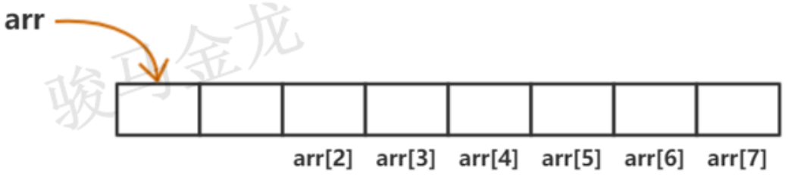
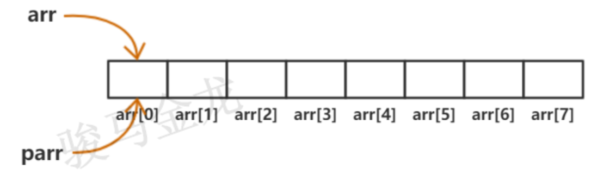
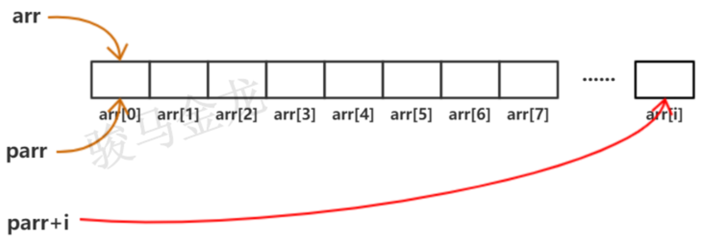

对于任意类型的数组arr，对于同类型的指针类型parr（确切一点，可以假设类型为int，即int arr[], *parr）。它们之间有如下"内幕"：
1.数组的名称arr本身就是一个指针，这个指针指向数组的第一个元素

2.因为名称arr本身是指针，所以可以直接赋值给同类型的指针parr：parr = arr，这使得parr也指向数组的第一个元素，所以这个赋值过程等价于parr = &arr[0]

3.指针和数组名在效果上是等价的。它们的区别在于：指针是变量。指针变量可以参与表达式的计算，如parr++和parr=arr是有效的，而arr=parr和arr++是无效的
4.数组的各元素在内存中是连续的，可以通过索引下标的方式arr[i]获取任意一个元素，而arr[i+1]一定代表下一个元素(除非数组索引越界)，arr[i-1]一定代表前一个元素(除非没有前一个元素)
5.因为数组名也是指针，所以也可以将获取元素的方式写成*(arr)，它等价于arr[0]，即代表第一个元素的值。同理，*(arr+1)等价于arr[1]即表示第二个元素，*(arr+i)等价于arr[i]即表示第i+1个元素
6.也就是说，arr代表第0个元素的地址，arr+1代表第2个元素的地址，arr+i代表第i+1个元素的地址
7.也可以直接通过指针的加减法运算取得对应位置的元素地址。parr代表的是第一个元素(index=0)的地址，parr+1代表第二个元素(index=1)的地址，parr+i代表第i+1个元素(index=i)的地址
8.所以，*(parr)代表的是数组第一个元素的值，*(parr+1)代表数组第二个元素的值，*(parr+i)代表数组第i+1个元素的值

9.实际上，数组索引下标运算就是先转换成对应的指针，再通过指针去取得对应元素的。所以，使用指针的效率比使用索引下标取数组值的效率要高，它少了一个转换过程。或者说，指针和数组的索引是一一对应的关系。
10.由于数组名指向的是数组的第一个元素，如果某个指针指向这个数组中的某个元素，那么可以说这个指针指向的就是一个子数组。例如arr是原始数组，那么parr+3是一个子数组，arr+4也是一个子数组。这使得我们可能访问到数组第一个元素之前的元素(即父数组中子数组之前的元素)，比如-1、-2在操作上都是允许的，除非这样的访问超越了父数组的边界。
等价的方式 | 意义
--------------------------------|---------------------
&arr[i] arr+i parr+i | 都表示index=i元素的地址
--------------------------------|---------------------
arr[i] *(arr+i) *(parr+i) | 都表示index=i元素的值特别的，当i=0时：
&arr[0] arr parr 都表示数组第一个元素的地址
arr[0] *(arr) *(parr) 都表示数组第一个元素的值指针是变量，可以直接参与表达式的运算，指针是地址，可以进行地址运算。
有效的指针运算包括：
(arr+3) - arr + 1表示第1个元素到第4个元素之间的4个元素)对于指针和整数之间的加减法或指针的自增、自减运算，需要注意的是这些运算符之间的优先级以及从右向左计算的方式。
parr += 1表示将指针向后移动一位，等价于++parr。
*++parr表示取下一个数组元素，因为一元运算符*和++的优先级相同，它们从右向左运算。
*parr++表示取得parr当前指向的元素，但是parr已经指向下一个元素了。
指针之间可以比较大小，当然，只有指向同一数组的多个指针之间的比较才有意义。p和q两个指针，如果p指向的元素在q指向的元素之前，那么p < q。通过比较指针，也可以很容易判断数组的访问是否越界。例如，判断指针指向的元素是否在第99个元素之后，对于只有100个元素的数组来说，这就是在判断越界。
parr > &arr[99]
parr > arr + 99 // 与上等价同理，指向同一数组的多个指针之间可以进行减法运算(只能进行减法)，指针之间的减法运算返回的是这两个指针之间的元素个数。
C语言是按值拷贝的。
但因为数组名本身就是指向第一个元素的指针，所以按值拷贝也只是拷贝这个指针，拷贝得到的指针副本仍然指向数组的第一个元素，并且通过这个指针能够遍历到后面的元素。
因为拷贝后得到的副本指针指向的仍然是函数外面的数组结构，所以在函数内部可以直接通过这个指针修改外部数组。
下面两种想要以数组作为参数的函数在行为上是等价的：
void func1(int arr[]){}
void func1(int *parr){}调用该函数时，都可以传递数组名或指针给它们：
int arr[];
int *parr;
parr = arr;
func1(arr);
func1(parr);